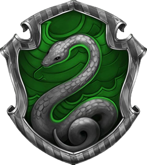

Congratulations! You got sorted into
Slytherin!

‘Or perhaps in Slytherin
You’ll make your real friends
Those cunning folk use any means
To achieve their ends.’
Slytherin is one of the four Houses at Hogwarts School of Witchcraft and Wizardry,
founded by Salazar Slytherin. Salazar instructed the Sorting Hat to pick students who
had a few particular characteristics he most valued. Those characteristics include cunning,
resourcefulness, and ambition. The emblematic animal of the house is a snake and Slytherin’s
colours consist of green and silver.
Resourcefulness
Cunning
Ambition
Determination
Leadership
Self-Preservation
Fraternity
Lineage